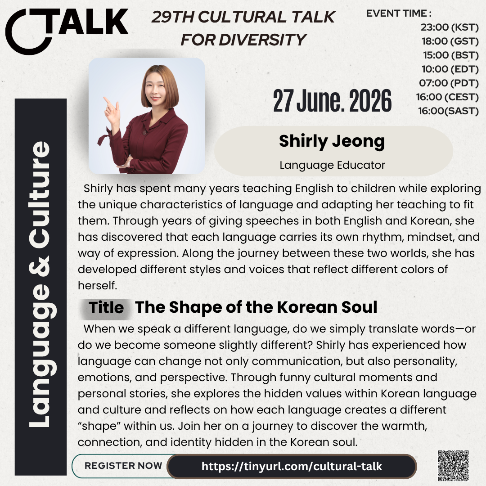

29th Cultural Talk For Diversity
Theme: Language & Culture

Event Details
Date: 27 June 2026
Time: 23:00 (KST) / 18:00 (GST) / 15:00 (BST) / 10:00 (EDT) / 07:00 (PDT) / 16:00 (CEST) / 16:00 (SAST)
Conference Overview
The 29th Cultural Talk explored how language carries culture, identity, rhythm, and ways of seeing the world. Through stories from Korean, British, Indian, and multilingual contexts, the session looked at what changes when people move between languages and cultural spaces.
Sushma Pugalia reflected on identity through nationality, ethnicity, and language, while Shirly Jeong shared how Korean language and culture shape expression, personality, and connection. Together, the talks opened a warm and thoughtful conversation about what language preserves, reveals, and sometimes transforms within us.
Speaker Details
Sushma Pugalia
Role: Language Tutor & Multilingual Speaker
Topic: What gets Lost in Translation: Language as part of our Identity
Born and educated in the UK within a traditional Indian family, Sushma explores identity through the lenses of nationality, ethnicity, and language. Her experience across British, Indian, and multilingual spaces gives her a personal view of how humour, politeness, directness, and belonging are expressed differently across contexts.
Her talk will look at what can shift when language moves across cultures, and how communication is shaped not only by words, but also by the cultural habits and identities carried behind them.
Shirly Jeong

Role: Language Educator
Topic: The Shape of the Korean Soul
Shirly has spent many years teaching English to children while exploring the unique characteristics of language and adapting her teaching to fit them. Through speeches in both English and Korean, she has observed how each language carries its own rhythm, mindset, and way of expression.
Her talk will explore how speaking a different language can affect communication, personality, emotion, and perspective. Through cultural moments and personal stories, she will reflect on the values and identity hidden within Korean language and culture.